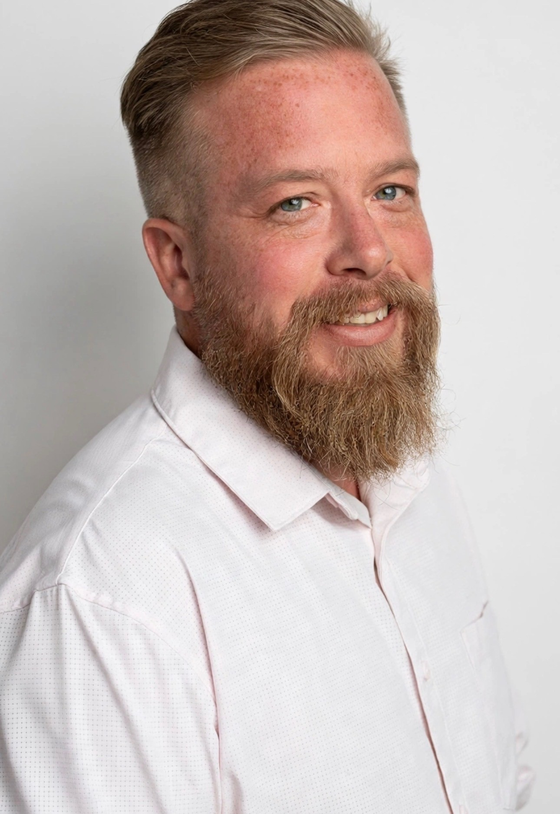
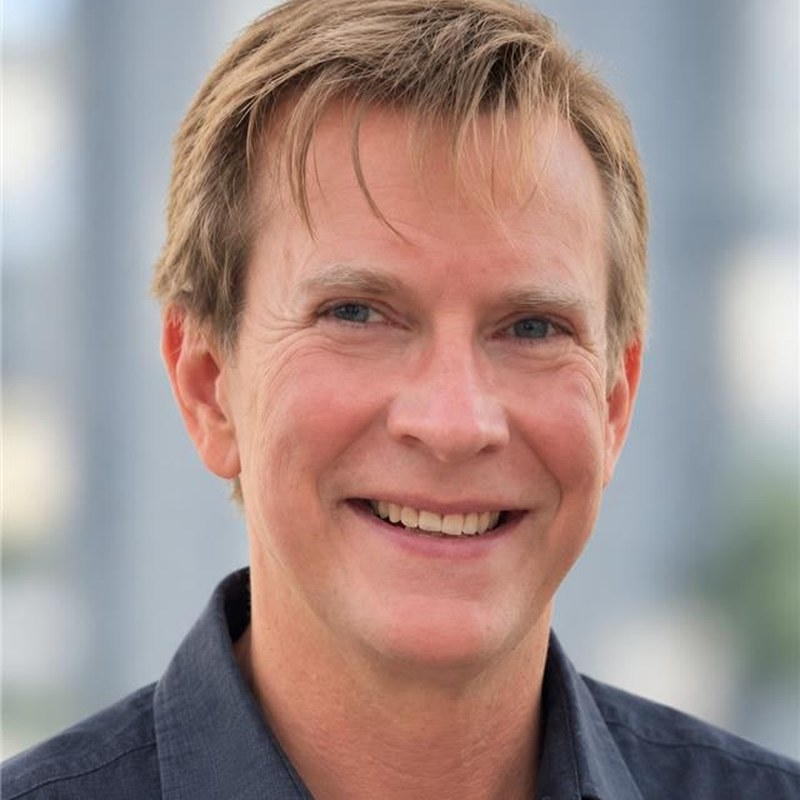

Who we are
Real people behind the work.
We have run data, governance and analytics inside operating businesses in hospitality and leisure, and we have sat in the chair your operator sits in. We know what a number is worth to the person who has to act on it, and what happens when it is wrong. We built what we run for you because we were tired of doing the same work by hand for a different client every year and watching it go stale. It started with this:
I have seen the mess.
The budget overages in builds and maintenance.
The thin analytics delivery.
The questioning of the final report in the C-suite.
I don't want that for you.
The team

Aaron Nelson
Founder & CEO
Aaron has spent his career inside the mess: at resorts, in real estate, in energy, and in government. Every time, the pain was the same: the numbers didn’t agree, nobody could say why, and the people who needed an answer were the ones least equipped to dig for it. He started Handwave AI to take that pain off the table for operators who don’t have a data team, in the way he’d want it done for his own business. He sets the direction, holds the architecture, and owns every client relationship.

Troup Miller
Co-founder · CIO
In the AI era, we have found that the tool gives us fast, confident, appealing results, because it prioritizes a happy user over a correct answer. AI is a force multiplier in the world of high-trust, high-confidence analytics, but it is only part of the equation. At Handwave AI, our mission is to channel this raw power through extensive human experience and expertise to deliver on our core promise: answers you can trust, because you know where every answer came from.
Naveen Chandra
Analytics and business value
Naveen leads the conversations with owners who do not speak data. He knows what a number is worth to the person who has to act on it, what an operator actually wants when they ask for a report, and how to tell the difference between a finding and a dashboard.
Technology brings the information together. People make sure it means something.
Talk to us
Bring the problem you're trying to solve.
A first call is thirty minutes. We'll tell you what it would take to get your data working on it, and honestly whether we fit.
Book a call